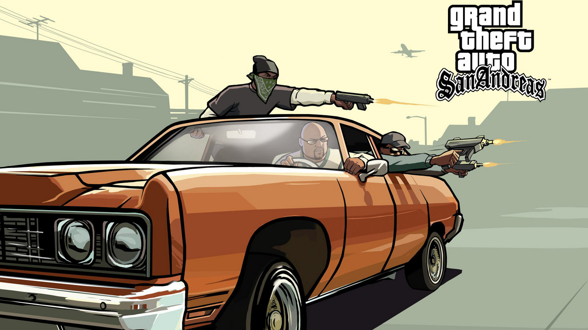
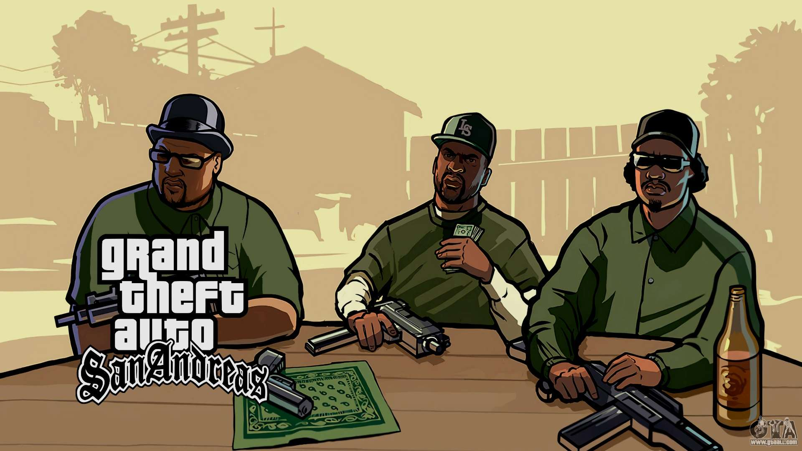
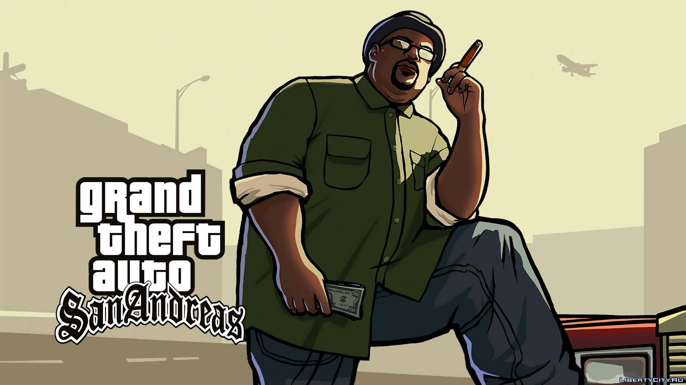

Es un videojuego de acción-aventura de mundo abierto desarrollado por Rockstar North y publicado por Rockstar Games. La historia del juego trascurre en el estado ficticio de San Andreas, basado en la zona suroeste estadounidense. Ambientado en 1992, San Andreas cuenta la historia de Carl Johnson, quien decide volver a Los Santos tras cinco años de haberse establecido en Liberty City. Su trama se basa, de modo muy abierto, en sucesos como la rivalidad entre las pandillas Bloods y Crips, la epidemia de crack que hubo en esa época y los disturbios de Los Ángeles de 1992. Grand Theft Auto: San Andreas toma lugar en el estado ficticio de San Andreas, que a su vez está basado en California y Nevada, durante el año 1992. Ésta se compone de tres grandes ciudades ficticias: Los Santos es el equivalente en San Andreas a Los Ángeles; San Fierro corresponde a San Francisco; y Las Venturas es Las Vegas.
Es el personaje principal del juego, llega luego tras 5 años de estar fuera en Liberty City huyendo del asesinato de su hermano menor Bryan porque su hermano le dijo que a su madre la habían asesinado, es un pandillero perteneciente a la banda de los Grove Street Families, a lo largo de la historia tendrá sus altas y bajas, desde problemas con la policía hasta robos exitosos de casinos.
Es uno de los personajes más cercanos a Carl, fué quien le dio la bienvenida cuando vino tras su ausencia de 5 y lo llevó al funeral de su madre, es un personaje muy sabio, calmado y glotón, pertenece también a los Grove Street Families, a lo largo del juego nuestra amistad con este personaje se quebrará de manera muy dramática.
Es un personaje muy cercano a Carl, se podría decir que tienen una buena relación, aunque constantemente se ofenden entre ellos, es un personaje muy adicto a la marihuana ya que se le puede ver fumando casi en todas las misiones, es perteneciente a los Grove Street Families, es un personaje medio torpe pero bastante hábil para las guerrillas.
Es el hermano mayor de Carl, le guarda rencor porque asume que tanto la muerte de Bryan como la madre de ambos es culpa de Carl, es el líder de los Grove Street Families, aunque carece de liderazgo, a lo largo del juego, trataremos de recomponer la banda junto a él, Ryder y Big Smoke.
Es la hermanita de Carl y Swett, es novia de Cesar Vialpando, pero su hermano mayor Swett no lo aprueba mucho, es una chica bastante lista, ya que ayuda al protagonista en temas de negocios y de hacer dinero "legal", aunque viene de los suburbios es una chica muy respetable, ya que no consume drogas ni es prostituta.
Es un gánster mexicano, con el cual desarrollaremos una gran y fuerte amistad, se podría decir que él se convierte en el mejor amigo del protagonista, es el líder de la banda de los Aztecas, y también tiene renombre en las carreras y competiciones de baile de los autos Lowriders de Los Santos.
Es un agente del gobierno, es el personaje más misterioso del juego, le encomienda tareas a Carl bastante peligrosas (estilo 007), es un personaje tenaz, inteligente y habilidoso, ya que usa al protagonista para sus fines políticos que aunque son buenos llevan un alto riesgo para el protagonista, ¡tremendo personaje!
Es un viejo conspiranoico y en contra del sistema, es bastante drogata pero las cosas que dice tienen bastante sentido, las misiones que le encomienda al protagonista son las más excitantes y controversiales de todo el juego, a menudo pone nombres extraños a sus cosas, como herbie (a una cabra) o nave nodriza (a su vehículo).
Es el personaje villano del juego, un policía corrupto, drogata y abusador del poder, le hace la vida imposible al protagonista cada vez que puede, se aprovecha de todos y es un tremeno patán, controla todo Los Santos con sus estrategias sucias y con las drogas, es el responsable de las guerras desenfrenada entre pandillas.
Es un personaje asiático, líder de las mafias chinas, se convierte en otro personaje bastante importante para el protagonista, porque hacen negocios bastante lucrativos, es ciego pero nisiquiera lo parece, porque puede correr, disparar y conducir como una persona normal, sus subordinados dicen que está "bendecido".
Es un rapero rico y famoso de los Santos, el cual pierde su fortuna cuando le roban su libro de rimas, estando cerca del suicidio tiene una interacción con el protagonista Carl y a partir de ahí su vida vuelve a recomponerse poco a poco, posee una gran mansión en la parte rica de la ciudad.
Es un joven que se cree rapero ganster, es precipitado, ignorante e impaciente, es amigo de Carl, por diversas razones entro a la carcel y cuando sale comienza a trabajar en un restaurante, Carl lo ayuda en su camino de convertirse en un popular rapero ganster, canta bastante malo y sin ritmo.